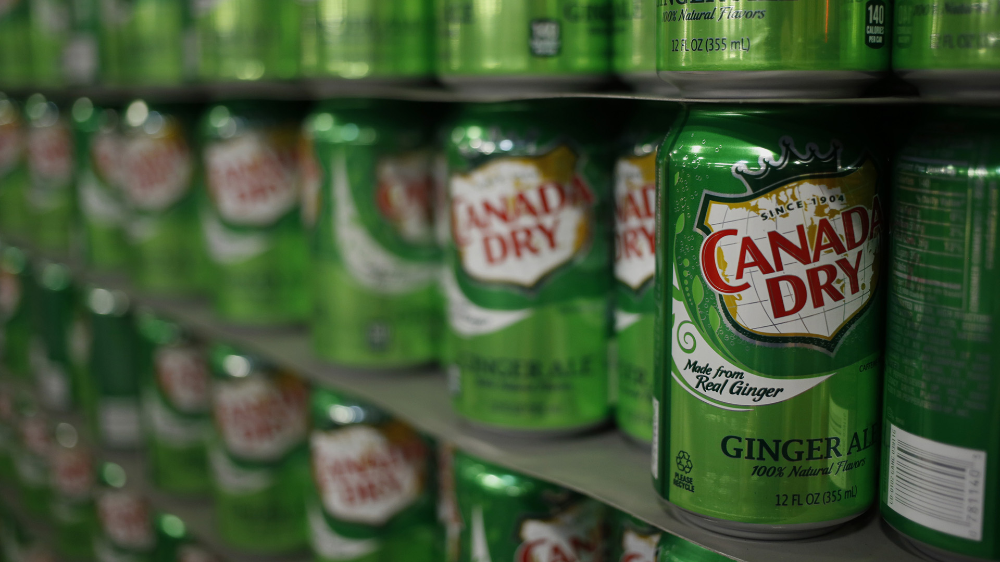

Introduction
Ginger Ale became popular after the Second World War because people were fascinated by the special taste, and it is a kind of dessert that did not need to be baked, it is so convenient that people began to try this food in their houses.
After that, Canadian made it became famous in the world by introducing it in the Expo 86. In 2006, the National Post declared Nanaimo bars as the most popular confection in the country.
Origin of the Ginger Ale
In the 1850’s, the Irish doctor Thomas Joseph Cantrell invented a new type of carbonated soft drink with the flavor of ginger, and this drink was known as ginger ale. In Britain and Canada, there were a lot of companies tried to improve and develop it, so there were two major kinds of ginger ale in the Canadian market, “Canada Dry” and “Schweppes”. Some people usually used it as a mixer to combine with other spirit-based beer.
After the policy of prohibition and the banning of alcohol in North America, the consumers of beer began to support and purchase ginger ale as a substitute good of beer. 15 years later, the coke came out and it replaced ginger ale successfully, and ginger ale was never as popular as coke.
Variation of ginger ale
Some people would like to combine ginger ale with gin to make a gin buck. People found that ginger ale was an excellent mixer of the drink with the flavor of citrus, so they pour gin, lemon juice, and ginger ale together to make a cup of gin buck. It tasted smooth but also favorable.
Interesting fact : About Canada Dry
Canada Dry is the representative product of ginger ale, and there is an interesting fact about it. In 2018, according to a survey in America, almost 20% of people expressed that they have drunk Canada Dry in one month, and that seems that Canada Dry still had a large market share in North American.
Also, Canada Dry is one of the most significant beverages in North America, because of its long history. Actually, Canada Dry has been appearing for more than 100 years, because the specific flavor is still attracting a lot of consumers in the world.